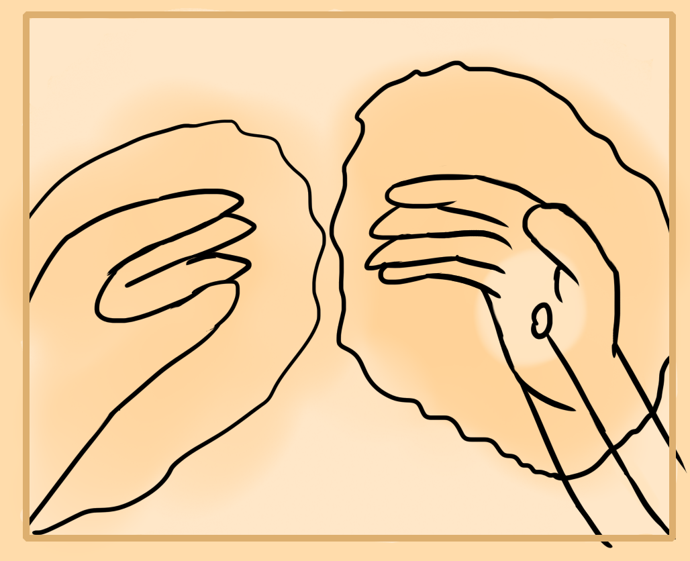
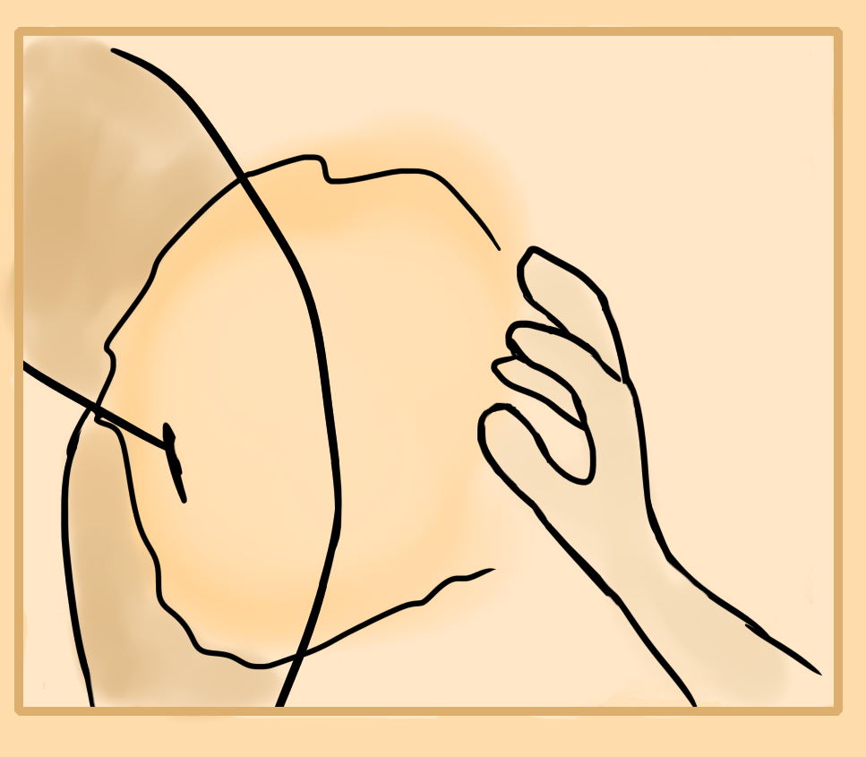
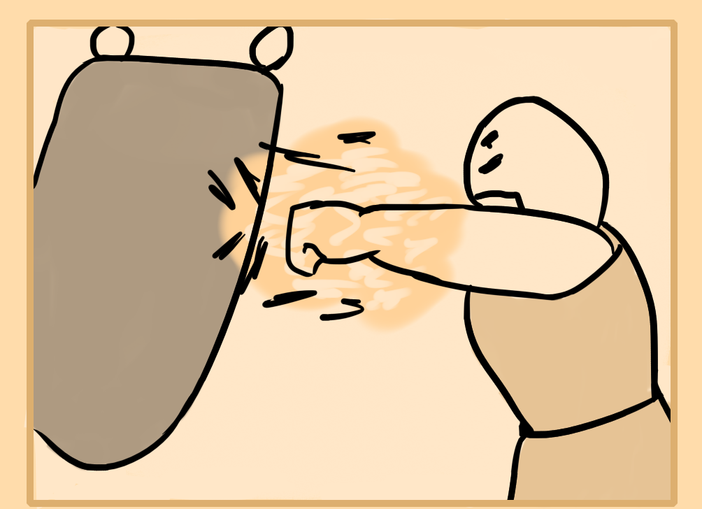

Now that you've developed some basic energetic ability and physique, you can start using it in life. Here I'll add some simple ideas about how to use it for hurting, defending and healing. These are some of the very traditional uses as would of been taught in martial arts.
Energy Healing
In this case you can either heal yourself internally or project energy via your hands to heal another person or even use it on yourself to practice. Similarly you can learn to control others energy flow through these methods.
To heal yourself internally, first relax into meditation and perform a diagnosis by feeling out what areas are most effected. Then feel out how the pain and damage spills out through the body.
So the first step is to build a body map of all the majorly damaged areas. You can use the center idea to see if any of the energy centers are damaged, similarly the channel idea of seeing where in your or the other persons channels are blocked.
After that, start out by drawing energy into the most troubled areas. Do this through holding focus there and feeling a light pulling in motion. Once you're confident with healing one area, try two at once, then you can slowly spread your focus out to heal most or all of the damaged areas.
This can take a lot of time. Serious injuries can take months or even years if they've damaged the bones and nerves. But you will notice improvements, expecially as your healing ability improves.
Now it's time to learn external energy projection or external healing. To do this, practice forming an aura around your hands.
The energetic center of the hand is located in the palm. You can anchor your focus there if needed. Then expand your focus out throughout the whole hand. Once you can confidently hold your aura in the hands start to expand it out even further beyond the boundary of your skin. Focus more of the auras power outside of the hand instead of inside of it. It kind of feels like a thin cloud expanding outside of your hand. Practice holding this hand aura for 5-10 minutes.
Once you're comfortable with the neutral hand aura, start to put your hand over a wrist, leg or some other part of your body. Feel what kind of sensations it brings in your body where the energy hand is located. It feels magnetic to me, like blood is drawing there. Start to practice projecting out energy from the hand by pushing forward with your focus towards to injured or test area.
You can also use different "energy forms" by controlling the size, strength, polarity, etc with your mind. Similarly the tips of your fingers can be used.
Eventually with practice you can begin to feel other peoples energy, their centers and channels, their problems, etc which makes it easier to diagnose and heal them. It feels like a kind of magnetic or tense force field that you can feel with your own bodies aura or by using the energy hand technique.
You can also practice your energy healing with trees or animals if you're unable to find people to work with. Practice projecting energy towards them, modulating your energy strength, making it tenser, relaxed and changing the size of your energy projection.
Body Enhancement
Now onto its use for attack and defense. Realistically to master this you'll want to learn taiji chaun but I'll teach some ideas that will help you to apply this to your own martial arts.
First exercise is to help protect you. There is a soft and hard version if this. Lets start with the hard version. This main idea in this is that you toughen and tense a part of your body and hold a lot of energy there.
Try it with your non dominant hand. Form a palm and similarly to the energy hand technique, stimulate the aura of your hand. Don't try to overly exert it out. Then solidify your palm by tensing it, making it strong. Keep your energy within the palm and merge them together so the energy and tensed palm become one. Strike your palm with a hammer fist with the opposite hand, or use your hardened palm to strike a tree. Notice how it's protected and does not hurt much. This technique can be used at the moment of impact for punching to defend your body as well as when you're struck by another in order to withstand the blow.
Body Enhancement - Soft
Soft works differently. Instead of being hard like a rock, you learn to flow and move more like water. Water allows anything to move it, this is what we will do.
Perform the hand energy meditation by focusing on your hand and energizing it. Relax the hand as much as you can. Move it around like water, let it flow to get comfortable with this feeling. Now slap or tap your soft or yin energy hand. The idea here is when you slap the yin hand, that you want to flow with the movement. Almost as if you're being pushed effortlessly. This is how to avoid the force by using yin or softness to resist and be lead by hardness.
It's a little difficult to perform in an actual fight but I've explained it here to show you what is possible. Similarly soft force is used in attacks to either wrap yourself around another person quickly. Or using extreme speed through relaxing and then tensing to cause damage.